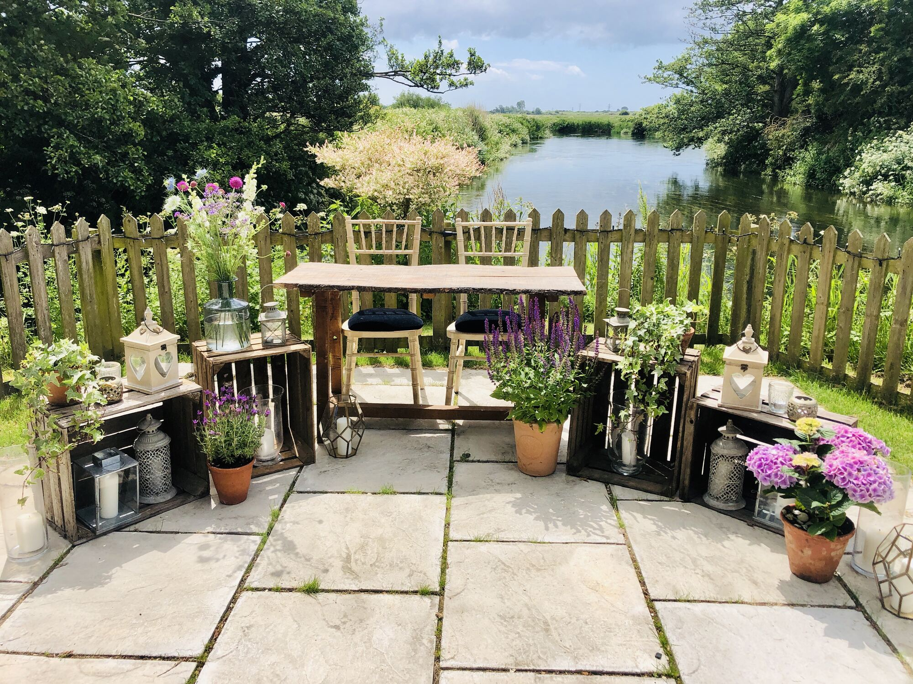
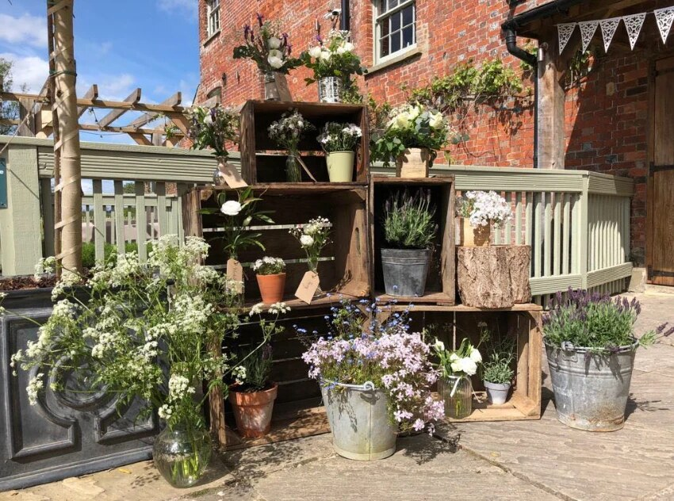
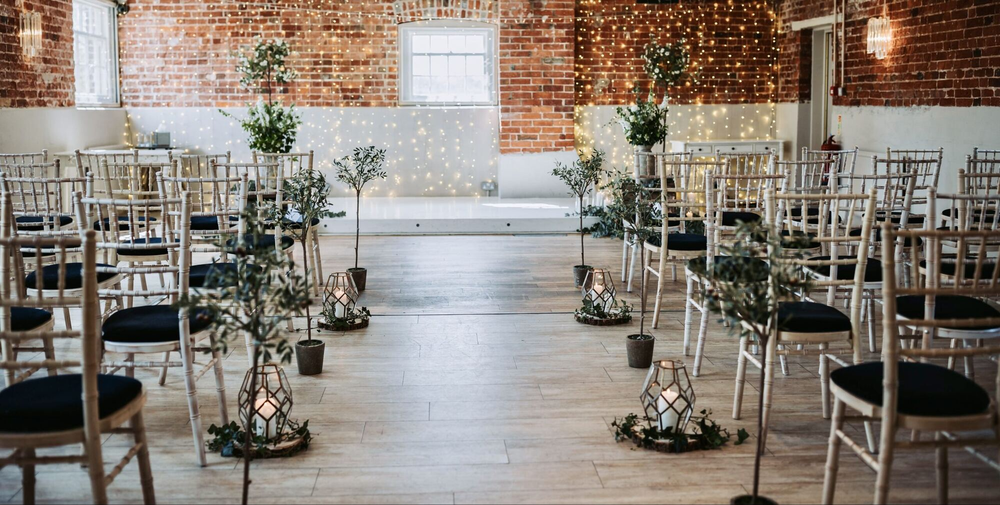
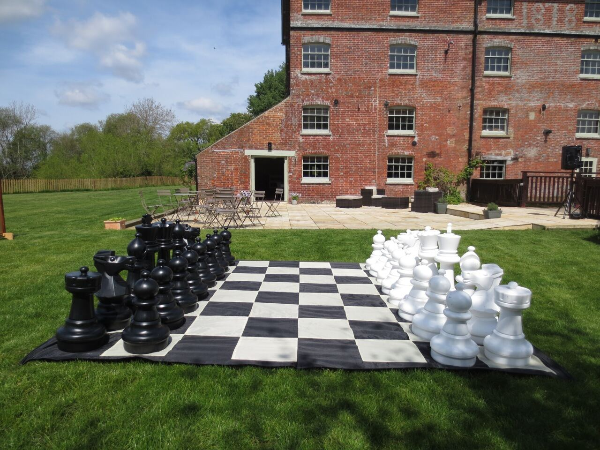

Hello, I'm Lucy
The story of IncaBella

Flowers & finishing touches
This is IncaBella
IncaBella is my floristry and wedding hire company. I create simple, seasonal flowers, and almost every arrangement has something home-grown in it, so they're fresh and full of scent.
Alongside the flowers there's a collection of lanterns, fairy lights, vintage props and garden games to hire. You choose what you love, and I deliver it, style it and clear it away afterwards, so you can simply enjoy your day.
As much or as little as you like
Some couples hand everything over to me, and some just want a couple of crates or a set of garden games. Either is lovely.
Full decoration
All three floors of the Mill styled for you, from the ceremony room to the tables.
PackagesPick and choose
Add individual lanterns, lights, props and games to your list and I'll set them up.
Hire collectionCome and see
You're welcome to see any of the hire items at Sopley Mill before you decide, by arrangement.
Arrange a visit
Rooted at Sopley Mill
Where it all happens
Sopley Mill has been in our family since 1870, and David and I lovingly restored it into the wedding venue it is today. IncaBella works mainly at the Mill, so I know every room, window and corner.
Everything in the collection is chosen to suit it, from the river window to the stairwell and the lawns, and you're welcome to come and see it all before you decide.

See you at the Mill